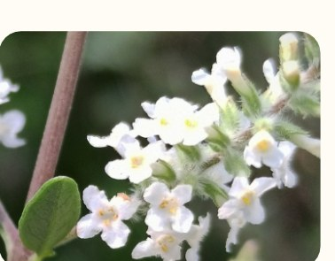
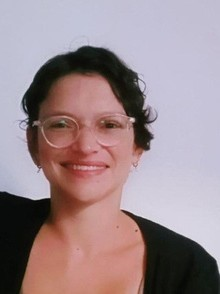
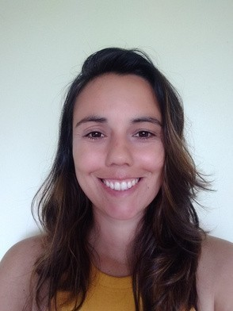
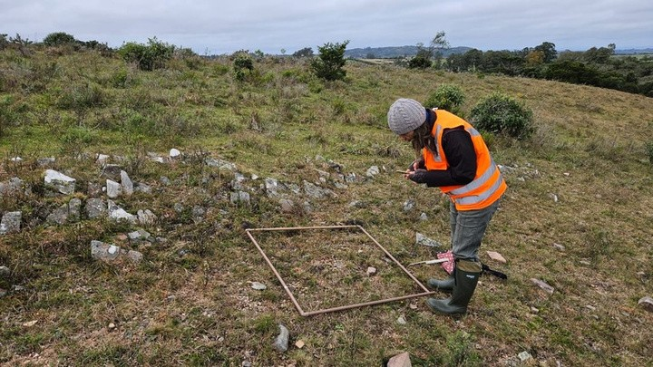
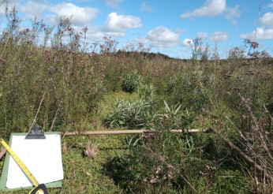
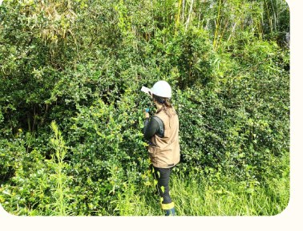

Consultoria ambiental · Pampa & Mata Atlântica
Recuperar o que foi degradado. Proteger o que ainda resiste.
A Garupá é uma consultoria ambiental especializada em licenciamento, recuperação de áreas degradadas e conservação da biodiversidade nos biomas Pampa e Mata Atlântica, no Rio Grande do Sul.

Sobre a Garupá
Uma consultoria pensada para quem recupera e protege o território
Somos uma empresa criada em 2023 para atuar como consultoria especializada na elaboração e implementação de projetos vinculados à conservação e restauração da vegetação nativa nos biomas Pampa e Mata Atlântica, no Rio Grande do Sul.
Atuamos junto a organizações parceiras para o cumprimento de normas ambientais relacionadas à conversão da paisagem natural, unindo rigor técnico a um compromisso real com a sustentabilidade e com o território.

Conhecida como garupá, é um arbusto nativo dos biomas Pampa e Mata Atlântica — perene, de folhas pequenas e flores delicadas, com uso tradicional na medicina popular.
Para nós, ela simboliza a riqueza das espécies nativas e o patrimônio natural que pode ser redescoberto por um olhar atento sobre a biodiversidade local.
Equipe
Quem está por trás dos projetos

Camila Leal Bonilha
Bióloga, Dra. em BotânicaPossui experiência como analista ambiental, em análise de Planos de Recuperação de Áreas Degradadas (PRADs), Estudos de Impacto Ambiental Simplificados (EIAS) e outros estudos ambientais.

Mariana de Souza Vieira
Bióloga, Dra. em BotânicaPossui experiência com restauração de áreas degradadas, controle de espécies exóticas invasoras e elaboração de estudos de flora. Atua na elaboração, gestão e implementação de projetos de restauração.
Serviços
Soluções técnicas de ponta a ponta
Área de atuação
Biomas Pampa e Mata Atlântica, Rio Grande do Sul
Atuamos a campo nos biomas Pampa e Mata Atlântica, levantando dados de flora e fauna, acompanhando a implementação de projetos e dando suporte técnico junto aos órgãos ambientais em todo o Rio Grande do Sul.


Projetos
Alguns dos trabalhos que já desenvolvemos

Recuperação de área degradada
Levantamento de flora, elaboração de PRAD e acompanhamento técnico da implantação.
Licenciamento ambiental
Estudos técnicos e interface com o órgão ambiental para viabilização de empreendimento.
Laudo de flora e fauna
Diagnóstico de cobertura vegetal e identificação de espécies para subsidiar processo de licenciamento.
Contato
Vamos conversar sobre o seu projeto?
Fale com a gente por telefone, WhatsApp ou e-mail — contamos um pouco sobre o seu projeto e indicamos os próximos passos.